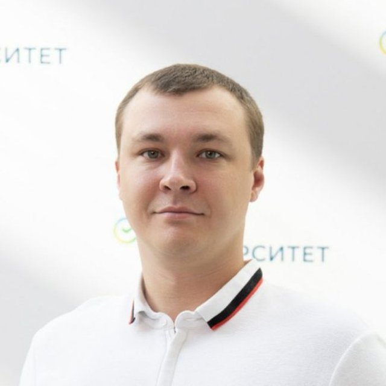

01
IT-лидерство
Развиваю IT-направления и команды. Руководил созданием высоконагруженных и отказоустойчивых систем с многомиллионной аудиторией.
Масштабные системы и IT-менеджмент
IT · ИСКУССТВЕННЫЙ ИНТЕЛЛЕКТ · ДАННЫЕ
Управляющий директор ПАО Сбербанк
IT-лидер трайбов · CDO блока
Развиваю IT-команды, внедряю ИИ
и выстраиваю работу с данными.

01 / ОБО МНЕ
Более 20 лет работаю в IT. С 2014 года развиваю технологические направления в Сбербанке. Сегодня — IT-лидер трёх направлений и Chief Data Officer блока.
Руководил крупными технологическими проектами, высоконагруженными и отказоустойчивыми системами. Мой фокус — новые технологии, IT-менеджмент и личная эффективность.
До Сбербанка работал в группе компаний ВТБ, «Спортмастере» и ГУП «Экономика» — над проектами Департамента экономического развития Москвы.
НИУ ВШЭ · Менеджмент
02 / НАПРАВЛЕНИЯ РАБОТЫ
Управление технологиями и их применение в рабочих процессах.
Развиваю IT-направления и команды. Руководил созданием высоконагруженных и отказоустойчивых систем с многомиллионной аудиторией.
С 2024 года внедряю ИИ-инструменты в системы и рабочие процессы. Встраиваю ИИ-агентов в повседневную работу команд.
С 2026 года в роли CDO блока выстраиваю работу с данными и создаю платформу с удобным доступом для людей и ИИ-инструментов.
03 / ОПЫТ В РЕЗУЛЬТАТАХ
От крупных технологических проектов до внедрённых ИИ-инструментов.
Аудитория крупных технологических проектов, которыми я руководил. Высоконагруженные и отказоустойчивые системы.
ИИ-инструменты встроены в рабочие процессы и системы.
Создано пространство для эффективной работы агентов и их применения в производственном процессе.
04 / КОНТАКТЫ
IT-лидерство, внедрение ИИ и работа с данными — мои основные профессиональные темы.
Контакты будут добавлены позже.